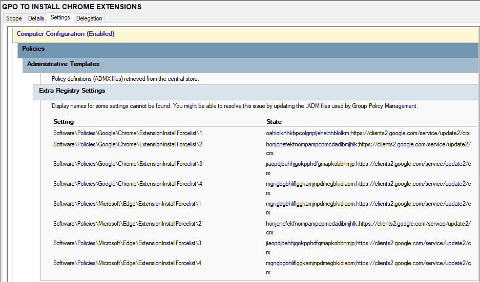
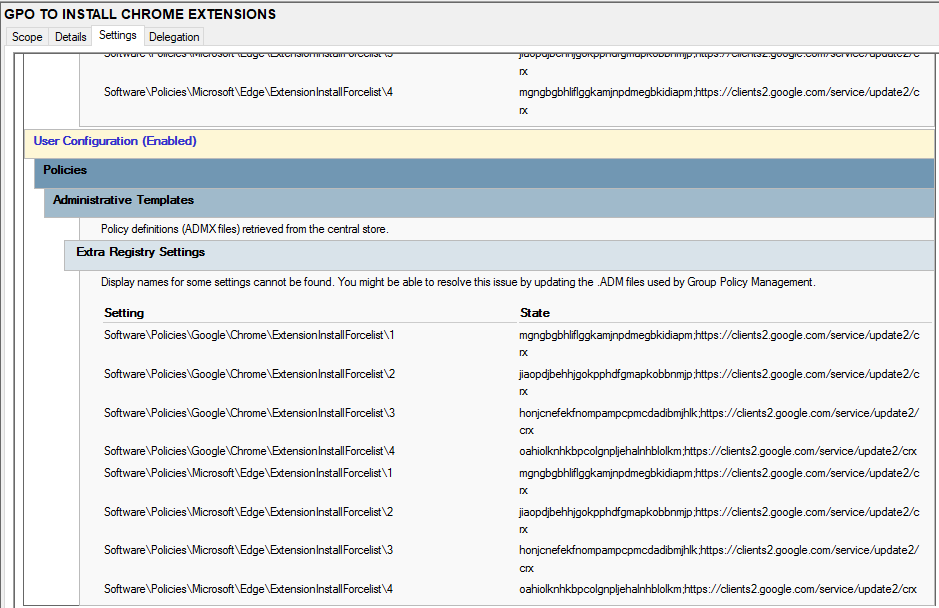

Install Approved Chrome Extensions Only
Purpose
This policy ensures that only approved and trusted Google Chrome extensions can be installed by users. It prevents installation of unauthorized or potentially harmful extensions while maintaining necessary functionality for lab activities.
How it works
The Group Policy enforces a whitelist of allowed Chrome extensions using extension IDs. Any extension not included in the approved list is automatically blocked from installation or execution.
How it is applied
- Open Group Policy Management Console (GPMC)
- Edit the User Configuration policy
- Navigate to: User Configuration → Policies → Administrative Templates → Google Chrome → Extensions
- Enable Configure extension installation whitelist
- Add approved extension IDs to the whitelist
- Optionally block all others using blacklist policy
- Apply changes and run
gpupdate /force
Screenshot
Whitelist configuration for Chrome extensions in Active Directory:

